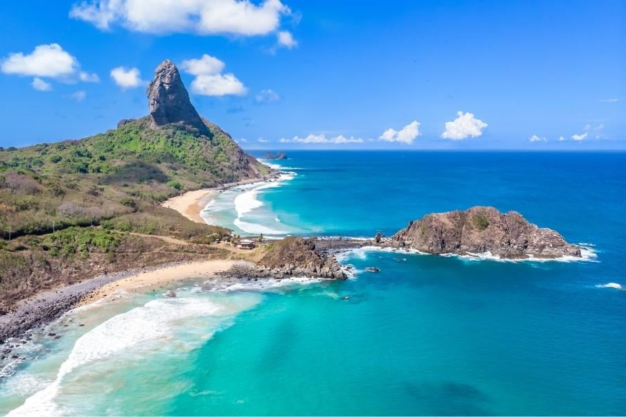

Pernambuco é um estado localizado no Nordeste do Brasil, com capital em Recife, uma das maiores e mais históricas cidades da região. O estado é conhecido por suas praias maravilhosas, como Porto de Galinhas, Fernando de Noronha (um famoso arquipélago), e a praia de Boa Viagem. A cultura pernambucana é rica e variada, destacando-se pelo frevo, o maracatu e o samba de coco, além do famoso carnaval de Recife e o São João no interior. O artezanato de renda e cerâmica também é típico do estado. A economia de Pernambuco é diversificada, com destaque para o turismo, a indústria, a agricultura (principalmente a produção de canela-de-açúcar, frutas e fumo), e o setor de tecnologia em Recife, com o Porto Digital, um dos maiores polos tecnológicos do país. A indústria de alimentos também é muito forte, com diversas fábricas no estado. Pernambuco é também um dos estados com uma forte identidade cultural, com muitos marcos históricos, como o Recife Antigo e a Igreja de São Gonçalo do Amarante, que atestam a importância histórica de Pernambuco no período colonial e na luta pela independência do Brasil.
